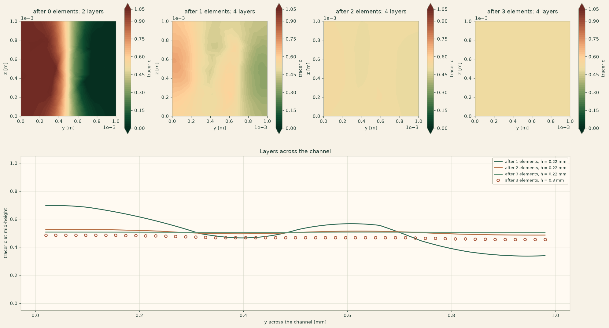
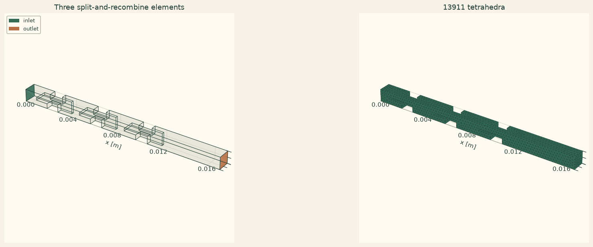

Docs › Examples › Split-and-recombine mixer benchmark: layers, numerical and physical mixing
Microfluidics · 3D
Split-and-recombine mixer benchmark: layers, numerical and physical mixing
A tracer passes three split-and-recombine elements that double its layers, computed on two meshes to separate the mixing by the scheme from the mixing by diffusion.
Run locally with OneSimulation. The example downloads are free. Running them requires an activated runtime. Runtime Alpha 0.2.1a7 · CPython 3.13 on macOS (Apple Silicon), Ubuntu 22.04 (x86-64), and Windows x64. Installation and activation · View pilot plans. Scope of the reference checks.

What it computes
The mixer is read from a STEP file and meshed with tetrahedra. OneSimulation solves the 3D creeping flow with Taylor-Hood elements and the tracer with quadratic Galerkin elements; since this advection has no streamline-upwind stabilization, the Péclet number is 100 so that the cell Péclet number stays at 22 to 30. The script that builds the STEP file comes with the notebook.
What it checks
The layers double from 2 to 4 in the first element as the law predicts; at this Péclet number diffusion blurs the thinner layers of the second and third element, and the mixing index reaches 0.978 and 0.998 after two and three elements; the two meshes differ by 0.016 in the final mixing index, and the tracer balance closes within 0.4 %.
Geometry
The notebook starts at the import of the CAD file split_recombine_mixer_benchmark.step: STEP (AP242), readable by any CAD program, with the names of the faces that the boundary conditions use. Put it next to the notebook.

The geometry script
The script split_recombine_mixer_benchmark_geometry.py builds the geometry with the CAD objects of OneSimulation and writes the file. Change a dimension there, run it, and run the notebook again.
"""Geometry of the OneSimulation example "Split-and-recombine mixer benchmark: numerical and physical mixing".
Builds a micromixer of square channels 1 mm wide with three split-and-recombine elements with the CAD
objects of OneSimulation, as a straight square channel from which the dividing walls are cut out.
In each element the stream is cut into an upper and a lower half; the upper half is squeezed into
the left half of the channel and the lower half into the right half, both are stretched back to the
full height, and the two halves are joined side by side again, so that the number of layers
doubles. Walls 0.2 mm thick separate the branches. The part is written to
split_recombine_mixer_benchmark.step with the face groups inlet (x = 0) and outlet (x = 17 mm).
"""
from onesim.cad.d3 import Box
mm = 1e-3
side, wall, elements = 1.0 * mm, 0.2 * mm, 3
length = (5 + 4 * elements) * mm
low, high = (side - wall) / 2, (side + wall) / 2
box = lambda x0, x1, y0, y1, z0, z1: Box(
length=x1 - x0, width=y1 - y0, height=z1 - z0, origin=(x0, y0, z0)
)
mixer = box(0, length, 0, side, 0, side)
for start in [(1 + 4 * k) * mm for k in range(elements)]:
mixer = (
mixer
- box(start, start + mm, -side, 2 * side, low, high)
- box(start + mm, start + 2 * mm, low, 2 * side, low, 2 * side)
- box(start + mm, start + 2 * mm, -side, high, -side, high)
- box(start + 2 * mm, start + 3 * mm, low, high, -side, 2 * side)
)
mixer = mixer.grouped(
inlet=mixer.select(faces=lambda face: abs(face.center[0]) < 1e-9),
outlet=mixer.select(faces=lambda face: abs(face.center[0] - length) < 1e-9),
)
mixer.save("split_recombine_mixer_benchmark.step")The notebook
The complete notebook, cell by cell. Run it to produce the figures and the comparison printout.
Split-and-recombine (SAR) mixers are a standard test for the transport of a tracer at high Péclet numbers: each element doubles the number of layers, so after three elements two inlet streams have become sixteen layers an eighth of the original thickness, with steep gradients between them. A simulation then mixes the layers twice - physically by diffusion, and numerically by the discretization. The benchmark asks how much of the computed mixing is real.
The mixer comes from the CAD file split_recombine_mixer_benchmark.step, written by split_recombine_mixer_benchmark_geometry.py: square channels of side \(w=1\) mm with three elements 4 mm long, walls 0.2 mm thick between the branches, 1 mm of inlet and 4 mm of outlet channel. Water flows at \(\bar U=1\) mm/s (\(Re=1\)). The tracer enters in the left half of the inlet.
The finite-element advection used here is the plain Galerkin form, without streamline-upwind stabilization, so the cell Péclet number \(Pe_h=\bar Uh/D\) must stay moderate to avoid oscillations. The tracer diffusivity is therefore chosen for \(Pe=\bar Uw/D=100\), which gives \(Pe_h\approx30\) and 22 on the two meshes (\(h=0.3\) and 0.22 mm). This is far from the nearly diffusion-free tracer of the original benchmark: at this Péclet number diffusion already blurs the layers of the second and third element, which are only 0.12 and 0.06 mm thick. A faithful near-zero-diffusion run needs a stabilized (streamline-upwind) or finite-volume tracer transport.
| face | flow | tracer | |---|---|---| | inlet | fully developed duct profile, mean speed \(\bar U\) | \(c=\tfrac12\left(1+\tanh((w/2-y)/0.05\,\text{mm})\right)\) | | outlet | traction free | no diffusive flux | | all walls | no slip | no flux |
Reference. The layer count doubles in every element, \(2^{n+1}\) after \(n\) elements (V. Hessel, H. Löwe, F. Schönfeld, Chem. Eng. Sci. 60, 2479-2501, 2005), as long as diffusion does not blur them. The tracer that enters must leave. The difference between the meshes bounds the error of the discretization in the mixing index.
import numpy as np
from onesim.cad.d2 import Plane
from onesim.cad.exchange import load
from onesim.materials import IsotropicSolid, NewtonianFluid
from onesim.meshing import TetrahedralMesher
from onesim.numerics import Numerics
from onesim.numerics.fem import FiniteElement, GalerkinAdvection, Lagrange, TaylorHood
from onesim.numerics.linear import SparseDirect
from onesim.numerics.nonlinear import Newton
from onesim.physics.heat_transfer import (
ConvectiveHeatTransfer,
FixedTemperature,
HeatFlux,
)
from onesim.physics.hydrodynamics import (
FixedVelocity,
FlowTraction,
IncompressibleNavierStokes,
NoSlipWall,
fully_developed_inflow,
)
from onesim.results.derived import derived_field
from onesim.results.sampling import field_function
from onesim.simulation import Problem, Simulation
from onesim.visualization import plots, theme
theme.set()Geometry and mesh
Tetrahedra of 0.3 mm and 0.22 mm; split_boundary_cells divides the cells whose corners all lie on walls.
mm = 1e-3
mixer = load("split_recombine_mixer_benchmark.step")
faces = mixer.boundaries
walls = faces.all - faces.inlet - faces.outlet
side, length = mixer.size[1], mixer.size[0]
meshes = {
size: TetrahedralMesher(target_size=size * mm, split_boundary_cells=True).generate(
mixer
)
for size in (0.3, 0.22)
}
view = plots.Camera(elevation=30, azimuth=-55)
fig = plots.figure(1, 2, size=(16, 5.5))
plots.geometry(
mixer,
selection={"inlet": faces.inlet, "outlet": faces.outlet},
labels=False,
camera=view,
title="Three split-and-recombine elements",
ax=fig[0],
)
plots.mesh(
meshes[0.22],
groups=("all",),
legend=False,
camera=view,
title=f"{meshes[0.22].cell_count} tetrahedra",
ax=fig[1],
)
plots.show()Flow and tracer
water, speed = NewtonianFluid(density=1000.0, dynamic_viscosity=1.0e-3), 1e-3
tracer = IsotropicSolid(
density=1.0,
specific_heat_capacity=1.0,
thermal_conductivity=speed * side / 100,
youngs_modulus=1.0,
poisson_ratio=0.3,
thermal_expansion_coefficient=0.0,
)
flows, tracers = {}, {}
for size, mesh in meshes.items():
flow = IncompressibleNavierStokes(domain=mixer.volume, material=water)
problem = Problem(
name="SAR benchmark: flow",
geometry=mixer,
physics=(flow,),
boundary_conditions=(
FixedVelocity(
boundary=faces.inlet,
physics=flow,
value=fully_developed_inflow(
mesh, faces.inlet, mean_velocity=speed, no_slip=walls
),
),
FlowTraction(boundary=faces.outlet, physics=flow, value=(0.0, 0.0, 0.0)),
NoSlipWall(boundary=walls, physics=flow),
),
)
numerics = Numerics(
spatial=FiniteElement(element=TaylorHood()),
initial_guess={flow.velocity: (0.0, 0.0, 0.0)},
nonlinear_solver=Newton(
linear_solver=SparseDirect(),
absolute_tolerance=1e-20,
relative_tolerance=1e-9,
),
)
flows[size] = (
Simulation(problem=problem, mesh=mesh, numerics=numerics)
.solve_stationary()
.field(flow.velocity)
)
transport = ConvectiveHeatTransfer(
domain=mixer.volume, material=tracer, velocity=field_function(flows[size])
)
problem = Problem(
name="SAR benchmark: tracer",
geometry=mixer,
physics=(transport,),
boundary_conditions=(
FixedTemperature(
physics=transport,
boundary=faces.inlet,
value=lambda y: 0.5 * (1 + np.tanh((side / 2 - y) / (0.05 * mm))),
),
HeatFlux(physics=transport, boundary=faces.all - faces.inlet, value=0.0),
),
)
numerics = Numerics(
spatial=FiniteElement(
element=Lagrange(order=2), convection=GalerkinAdvection()
),
linear_solver=SparseDirect(),
)
tracers[size] = (
Simulation(problem=problem, mesh=mesh, numerics=numerics)
.solve_stationary()
.field(transport.temperature)
)Results
Behind each element the tracer is sampled across the channel at mid-height; the layers are the sign changes of \(c-\bar c\). The mixing index \(1-\sigma/\sigma_0\) uses the flow-weighted standard deviation on full cross-sections of the joined channel.
across = np.column_stack(
(np.zeros(401), np.linspace(0.02, 0.98, 401) * side, np.full(401, side / 2))
)
behind = {0: 0.5 * mm, 1: 4.6 * mm, 2: 8.6 * mm, 3: 12.6 * mm}
profiles = {
(size, n): np.ravel(c.evaluate(across + (x, 0, 0)))
for size, c in tracers.items()
for n, x in behind.items()
}
layers = {
key: int(np.count_nonzero(np.diff(np.sign(profile - profile.mean())))) + 1
for key, profile in profiles.items()
}
grid_y, grid_z = np.meshgrid(
np.linspace(0.04, 0.96, 24) * side, np.linspace(0.04, 0.96, 24) * side
)
section = lambda x: np.column_stack(
(np.full(grid_y.size, x), grid_y.ravel(), grid_z.ravel())
)
sample = lambda size, x: (
np.ravel(tracers[size].evaluate(section(x))),
flows[size].evaluate(section(x))[:, 0],
)
deviation = lambda values, weights: np.sqrt(
np.average((values - np.average(values, weights=weights)) ** 2, weights=weights)
)
mixing = {
(size, n): 1 - deviation(*sample(size, x)) / deviation(*sample(size, behind[0]))
for size in meshes
for n, x in behind.items()
}
flux = (
lambda size, face: derived_field(
flows[size],
lambda u, points, c=tracers[size]: np.ravel(c.evaluate(points)) * u[:, 0],
name="tracer_flux",
unit="1",
)
.integrate(boundary=face)
.value
)
print("elements passed 0 1 2 3")
print("layers, doubling law " + " ".join(f"{2 ** (n + 1):6d}" for n in behind))
for size in meshes:
print(
f"layers, h = {size} mm " + " ".join(f"{layers[size, n]:6d}" for n in behind)
)
for size in meshes:
print(
f"mixing index, h = {size} mm "
+ " ".join(f"{mixing[size, n]:6.3f}" for n in behind)
+ f" tracer balance {flux(size, faces.outlet) / flux(size, faces.inlet) - 1:+.1e}, cell Péclet {100 * size * mm / side:.0f}"
)
print(
f"mixing index after three elements: difference between the meshes {mixing[0.22, 3] - mixing[0.3, 3]:+.3f}"
)Figure
The tracer on cross-sections behind each element, and the profiles across the channel at mid-height on both meshes.
fig = plots.figure(
layout=[["e0", "e1", "e2", "e3"], ["profiles", "profiles", "profiles", "profiles"]],
size=(18, 10),
)
for n, x in behind.items():
plots.section(
tracers[0.22],
plane=Plane(origin=(x, 0, 0), normal=(1, 0, 0)),
aspect=1.0,
limits=(0.0, 1.0),
subdivisions=2,
label="tracer c",
title=f"after {n} elements: {layers[0.22, n]} layers",
ax=fig[f"e{n}"],
)
plots.line(
across[:, 1] / mm,
{f"after {n} elements, h = 0.22 mm": profiles[0.22, n] for n in (1, 2, 3)},
points={
f"after 3 elements, h = 0.3 mm": (across[::8, 1] / mm, profiles[0.3, 3][::8])
},
ylimits=(-0.05, 1.05),
xlabel="y across the channel [mm]",
ylabel="tracer c at mid-height",
title="Layers across the channel",
legend="upper right",
ax=fig["profiles"],
)
plots.show()Going further
Raise the Péclet number together with a finer mesh in split_recombine_mixer_benchmark.py, keeping the cell Péclet number moderate: the layers then stay sharp longer, and the numerical share of the mixing shrinks with the cell size.